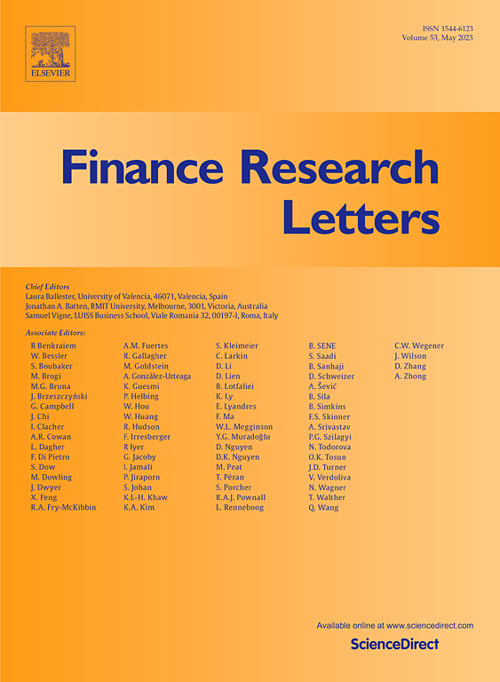
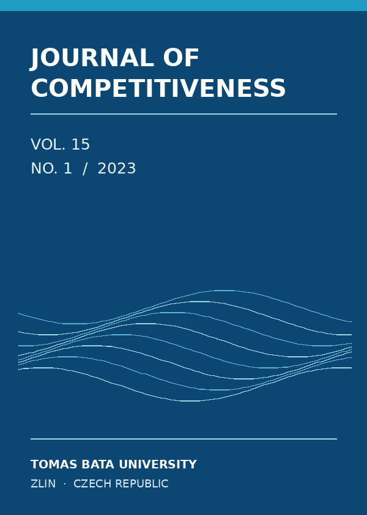

Finance
Research
Letters2026
Research
Letters2026

Media Interpretation, Investor Attention, and Volatility Escalation in Global Financial Markets
Finance Research Letters (2026) · Single-author article
DOI: 10.1016/j.frl.2026.110956
Academic research · Financial economics
Researcher in Behavioural Finance
and Financial Decision-Making
Faculty of Business and Management
Brno University of Technology · Czech Republic
My research examines how financial information is interpreted and how investor sentiment, information regimes and emerging technologies relate to financial market risk and decision-making under uncertainty.

Finance Research Letters (2026) · Single-author article
DOI: 10.1016/j.frl.2026.110956

Journal of Forecasting, 45(5), 2213–2237 (2026)
DOI: 10.1002/for.70141
Journal of Business Economics and Management, 24(1), 177–198 (2023)
DOI: 10.3846/jbem.2023.18805

Journal of Competitiveness, 15(1), 56–72 (2023) · Single-author article
DOI: 10.7441/joc.2023.01.04
International Visegrad Fund · February 2026 – July 2027
Co-investigator · Coordinator for the Czech partnerAustria–Czech bilateral research cooperation · 2025 · Supported by the Czech Ministry of Education, Youth and Sports
Research team memberAcademic mobility and cooperation with partner institutions in Georgia.
Participant · International academic cooperationFurther experience: six internal research projects at Brno University of Technology, including two junior projects led as principal investigator.
Research visit under the supervision of Prof. Shu-Heng Chen.
Erasmus+ research visit; continuing collaboration with Prof. Dipak Kumar Jana through joint research and publications.
Invited academic lectures and research exchange.
Invited lectures under international academic mobility.
Invited academic lectures and ongoing international cooperation.